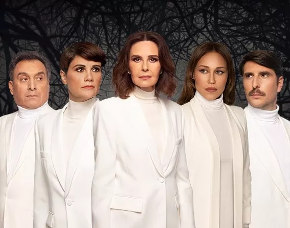

Τον ΑΜΛΕΤ, το κορυφαίο έργο του Ουίλιαμ Σαίξπηρ, παρουσιάζει η 5 η Εποχή το καλοκαίρι του 2024. Με τον Άμλετ, ο Σαίξπηρ καταθέτει στο παγκόσμιο θέατρο ένα έργο μνημειώδες που, αιώνες τώρα, έχει δημιουργήσει τη δική του μυθολογία. Μια κατάδυση στην ουσία του ανθρώπου και ταυτόχρονα ένα requiem στη σκοτεινή πλευρά του. Μέσα από τον Άμλετ, ο Σαίξπηρ μας περιγράφει την εποχή του, που είναι και δική μας εποχή. Ένα κείμενο υπερχρονικό και βαθιά πολιτικό.

Ικέτιδες
Οι Ικέτιδες είναι το πρώτο και το μοναδικό έργο που έχει διασωθεί από την τετραλογία του Αισχύλου «Δαναΐδες». Πρωταγωνιστής είναι ο Χορός των πενήντα Δαναΐδων, που μαζί με τον πατέρα τους Δαναό ζητούν άσυλο στο Άργος- τον τόπο που κάποτε εγκατέλειψε κυνηγημένη από τον «οίστρο» η πρόγονός τους Ιώ- προκειμένου να ξεφύγουν από τους εξαδέλφους τους, τους πενήντα γιους του Αιγύπτου, που απαιτούν να τις παντρευτούν με τη βία.
Αίας

Ο Μιχάλης Σαράντης ερμηνεύει και τους εννιά ρόλους της τραγωδίας που έγραψε ο Σοφοκλής, συνομιλώντας την ίδια στιγμή με το ζωγραφικό σύμπαν του Απόστολου Χαντζαρά σε μια πρωτότυπη παράσταση, μια εξωστρεφή σκηνική συνάντηση λόγου, κινήσεων και αισθήσεων. Κεντρικό πρόσωπο του έργο είναι ο Αίας, ο μεγαλύτερος πολεμιστής στο στρατόπεδο των Ελλήνων, ο οποίος δικαιούται τα όπλα του Αχιλλέα μετά τον
Αλήθειες
Αλήθειες της καθημερινότητας Αλήθειες της διπλανής πόρτας Αλήθειες για την ζωή του Αλήθειες για την ζωή σας. Όπως και να χει ο Αλέξανδρος λέει πάντα την δίκη του αλήθεια με μια οπτική που όλοι νιώθουμε και ζούμε ! Αλήθεια; Είστε έτοιμοι για μια παράσταση με πολύ story telling , με πολλές ερωτήσεις αλλά και στιγμές που εσείς οι ίδιοι γίνεστε πρωταγωνιστές ; Εμείς είμαστε … Αλέξανδρος Τσουβέλας.
Αναφορά σε μία Ακαδημία

Βασισμένο στο διήγημα του Κάφκα «Αναφορά σε μία ακαδημία», παρουσιάζεται στο πλαίσιο του αφιερώματος στον συγγραφέα «100 Χρόνια Μεταμόρφωση». Ο διακεκριμένος ηθοποιός και σκηνοθέτης Robert McNamara, προσεγγίζει την κλασική «Μεταμόρφωση» του Κάφκα με μια ανατρεπτική ματιά, εστιάζοντας στη μετάβαση ενός πιθήκου σε άνθρωπο και στην προσπάθειά του να επιβιώσει σε μια κοινωνία που κυριαρχεί η απανθρωπιά. Μέσω αυτής της σκοτεινής παραβολής, διερευνά θέματα όπως η ελεύθερη βούληση και τα δικαιώματα ζώων και ανθρώπων. Μετά το τέλος της παράστασης ακολουθεί συζήτηση με τον ηθοποιό
Βάκχες

Γραμμένη στην τρίτη δεκαετία του Πελοποννησιακού Πολέμου, η τραγωδία του Ευριπίδη εξιστορεί την έλευση του Διονύσου στη Θήβα, την άρνηση της αποδοχής της νέας θρησκείας και την τραγική αντιστροφή διώκτη και διωκόμενου που θα οδηγήσει στον αφανισμό του Πενθέα από την ίδια του τη μητέρα. Ο σκηνοθέτης, στη δεύτερη κάθοδό του στο αργολικό θέατρο, αναμετράται με ένα έργο αποκαλυπτικό για το ενδιαφέρον του ποιητή για την έκσταση και τον μυστικισμό. Όπως σημειώνει ο ίδιος: “Αν αυτό που διαμελίζεται επί σκηνής είναι το άνοιγμα στην ετερότητα, αυτό σημαίνει άραγε ότι έχει πια χαθεί για μας η προοπτική, μέσα από μια μύηση, μια πράξη συλλογική, να ανοίξουμε στο Άλλο, το δικό μας και του κόσμου; Τα κομμάτια μας δεν θα συνδεθούν ποτέ ξανά; Είμαστε καταδικασμένοι, όπως ο Πενθέας, να ζούμε περίκλειστοι στην καλά οχυρωμένη ατομικότητά μας, αλλιώς θα διαμελισθούμε; Δεν υπάρχουν πια οι γέφυρες που θα μας ενώσουν τον ένα με τον άλλο, με το Άλλο, με την ετερότητα των αισθημάτων, των ιδεών, των μύχιων σκέψεών μας, με το παράλογο μέσα μας, με το παράλογο του κόσμου;”
Διάλεξε το μέλλον σου αγάπη μου

Μετά από δύο εξαιρετικά επιτυχημένους θεατρικούς χειμώνες στο ΘΕΑΤΡΟ ΚΑΤΙΑ ΔΑΝΔΟΥΛΑΚΗ, με απανωτά sold out και θερμή ανταπόκριση από κοινό και κριτικούς, το νουάρ αριστούργημα του Ρομπέρ Τομά «Διάλεξε τον θάνατό σου αγάπη μου», το έργο που με την πλοκή του ανατρέπει τα πάντα και κόβει την ανάσα μέχρι και το τελευταίο δευτερόλεπτο, ξεκινά καλοκαιρινή περιοδεία σε διασκευή και σκηνοθεσία των Θανάση Παπαθανασίου και Μιχάλη Ρέππα, με την Κάτια Δανδουλάκη και έναν θίασο εξαιρετικών πρωταγωνιστών: την Αννα Μαρία Παπαχαραλάμπους, την Πηνελόπη Αναστασοπούλου, τον Γιώργο Γεροντιδάκη και τον Πάνο Σταθακόπουλο. Το έργο «Διάλεξε τον θάνατό σου αγάπη μου» αποτελεί διασκευή του έργου «Το Διπλό Παιχνίδι» του Ρ. Τομά, ενός από τα πιο δημοφιλή έργα του πολυβραβευμένου συγγραφέα. Οι καταιγιστικές εξελίξεις και οι ανατροπές πυροδοτούν το σασπένς και την ένταση μέχρι την τελευταία στιγμή. Η υπόθεση: η Φρανσουάζ Κορμπάν, ζάπλουτη κληρονόμος, ζει στην βίλα της μαζί με τον νεότερο σύζυγό της Πωλ Κορμπάν και την αφοσιωμένη οικονόμο της Αντέλ. Τα χρέη του Πωλ στα χαρτιά και η πίεση που ασκεί στην Φρανσουάζ για την αποπληρωμή τους κορυφώνουν ακραία την ένταση και την τριβή στην σχέση του ζευγαριού. Η ατμόσφαιρα βαραίνει όταν νυχτερινοί θόρυβοι ταράζουν την ηρεμία της βίλας – θόρυβοι και ίχνη μιας παρουσίας που ούτε ο ίδιος ο αστυνομικός διευθυντής δεν μπορεί να εξηγήσει… Η ξαφνική επίσκεψη της Βαρόνης Σαρντονί και αυτά που έχει να πει, μπερδεύουν ακόμη περισσότερο την ήδη τεταμένη κατάσταση.. Ένας ιστός αράχνης δείχνει να υφαίνεται γύρω από την Φρανσουάζ και κανείς δεν ξέρει ποιος είναι φίλος και ποιος εχθρός…
Ο Αλέξανδρος στα παλάτια της μνήμης
Μία παράσταση που ενώνει πολιτισμό, ιστορία και τέχνη με κοινό παρονομαστή την ζωή του μεγάλου Αλεξάνδρου.